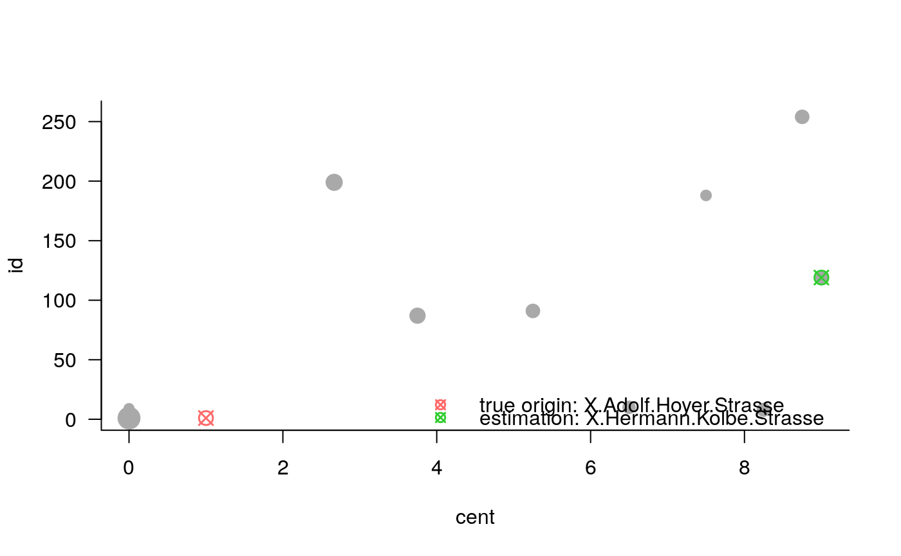

originorigin-methods.Rdprint produces an output for objects of class origin.
summary produces an object summary for objects of class origin.
plot generates an illustration of an origin object using the variable to be optimized.
performance evaluates an object of class origin and returns a data.frame identifying correct estimation, and computing rank and distance of correct detection.
# S3 method for origin print(x, ...) # S3 method for origin summary(object, x = object, ...) # S3 method for origin plot(x, y = "id", start, ...) # S3 method for origin performance(x, start, graph = NULL, ...)
| x | object of class |
|---|---|
| ... | further arguments to be passed to default |
| object | object of class |
| y | character specifying the variable being plotted at the y-axis; options are |
| start | numeric, giving the node of the true origin |
| graph |
|
performance.origin returns a data.frame with variables
origin = start representing the true origin,
est the estimated node of origin,
hitt logical indicating whether origin estimation is correct or not,
rank rank of correct detection,
spj number of segments from estimated origin to true origin (requires an igraph object),
dist distance along the shortest path from estimated origin to true origin (igraph edge attribute length)
data(ptnGoe) data(delayGoe) res <- origin(events=delayGoe[10,-c(1:2)], type='centrality', graph=ptnGoe) res#> Centrality-based origin estimation: #> #> estimated node of origin 119: X.Hermann.Kolbe.Strassesummary(res)#> Centrality-based origin estimation: #> #> estimated node of origin 119: X.Hermann.Kolbe.Strasse #> #> auxiliary variables: #> id events cent #> Min. : 1 Min. : 0.0000 Min. :0.000 #> 1st Qu.: 65 1st Qu.: 0.0000 1st Qu.:2.938 #> Median :129 Median : 0.0000 Median :5.875 #> Mean :129 Mean : 0.6459 Mean :5.167 #> 3rd Qu.:193 3rd Qu.: 0.0000 3rd Qu.:8.062 #> Max. :257 Max. :46.0000 Max. :9.000 #> NA's :247#> start est hitt rank spj dist #> 1 X.Adolf.Hoyer.Strasse X.Hermann.Kolbe.Strasse FALSE 9 5 3330